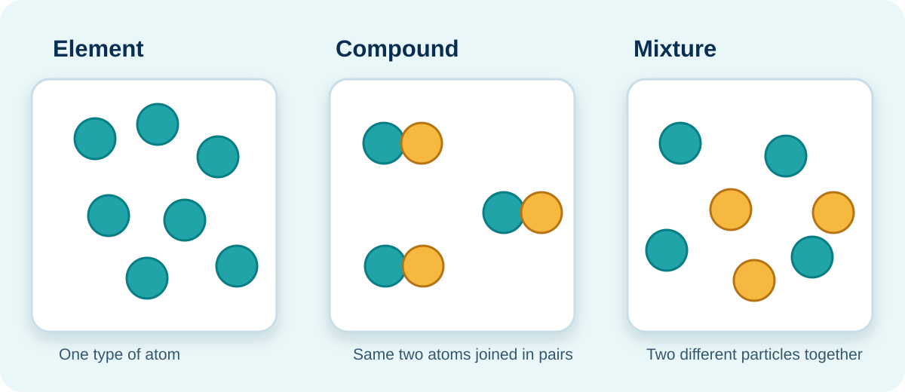

ECD CONTENT › What Matter Comprises Elements and/or Compounds That Are Not Chemically Combined?
BUILD A SCIENTIFIC MODEL
What is in a sample of matter?
Scientists use models to reason about particles too small to see. The colour of a particle in this model represents a different type of atom.

A model is not a photograph. It helps us explain what we cannot see directly.
SLS ACTIVITY A1
Sort the samples: element, compound or mixture?
Drag each sample into the correct evidence tray. On a touch device or keyboard, select a sample first, then select its tray.
Sample bank
Evidence trays
Element
One type of atom
Compound
Atoms chemically joined in a fixed ratio
Mixture
Different substances, not chemically joined
Sort all 10 samples, then check your evidence.
SLS ACTIVITY A2
Separate a model mixture safely
Use the property of each substance to obtain iron filings, aluminium pieces and salt without making a new substance.
Investigation record
| Step | Observation |
|---|---|
| No observations recorded yet. | |
Change one property-based method at a time and record what it does.